第5章 · 原课件与完整中文翻译
上方为英文原页，下方为对应的完整中文翻译，标题、正文、图内文字和公式按原页顺序排列。
页号按PDF顺序。原课件的历史日期、学期、课堂安排和研究结论按原文保留；相关概念与适用条件见教程正文。符号、代码、作者姓名及便于检索的专有名称保留原文。
Lecture 05 · 71页
Lecture 05 · PDF p1
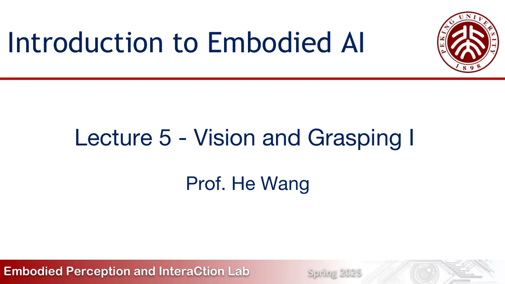
第 5 讲：视觉与抓取 I
王鹤教授（He Wang）
北大具身感知与交互实验室（EPIC Lab）
2025 年春季
Lecture 05 · PDF p2
Lecture 05 · PDF p3
Lecture 05 · PDF p4
Lecture 05 · PDF p5
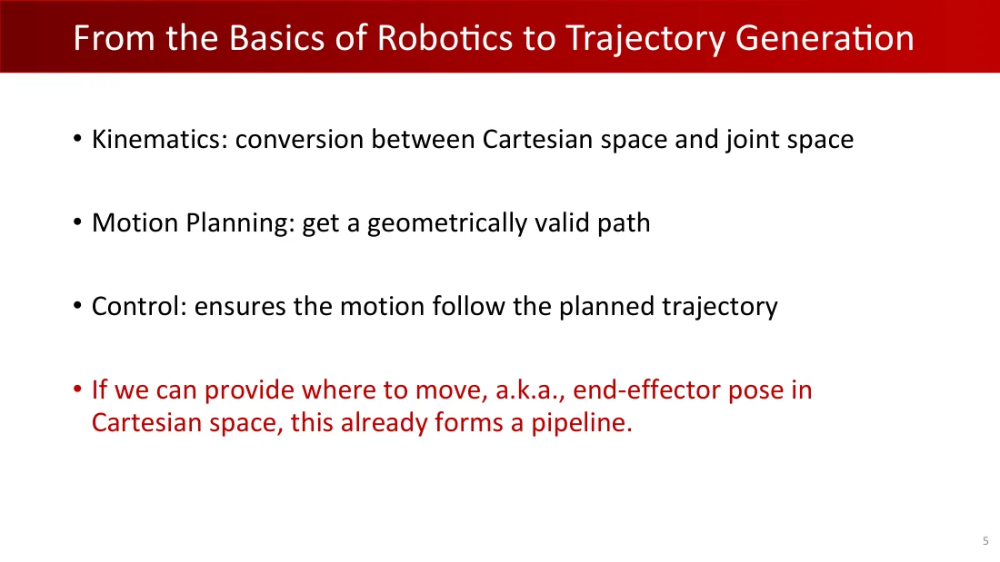
- 运动学：笛卡尔空间与关节空间之间的转换。
- 运动规划：获得一条几何上有效的路径。
- 控制：确保运动沿着规划的轨迹进行。
- 如果我们能够给出要移动到哪里，即笛卡尔空间中的末端执行器位姿，这就已经形成了一套流程。
Lecture 05 · PDF p6
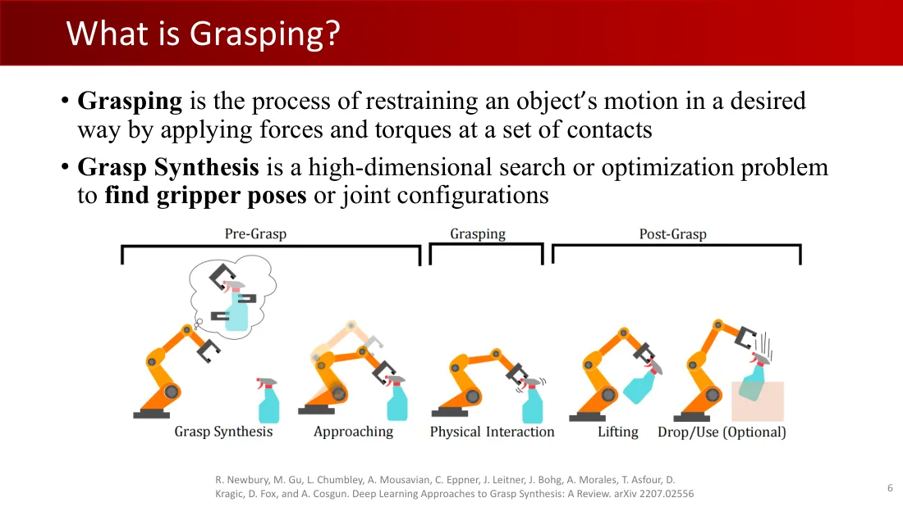
- 抓取：在一组接触点施加力和力矩，以期望的方式约束物体运动的过程。
- 抓取合成：寻找抓手位姿或关节构型的高维搜索或优化问题。
抓取前 → 抓取 → 抓取后。
抓取合成 → 接近物体 → 物理交互 → 抬起 → 放下／使用（可选）。
来源：R. Newbury、M. Gu、L. Chumbley、A. Mousavian、C. Eppner、J. Leitner、J. Bohg、A. Morales、T. Asfour、D. Kragic、D. Fox、A. Cosgun，《深度学习抓取合成方法综述》，arXiv:2207.02556。
Lecture 05 · PDF p7
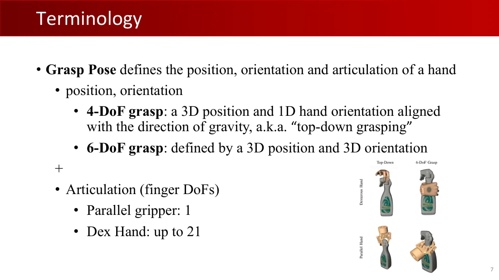
- 抓取位姿：抓手的位置、朝向及关节构型。
- 4 自由度抓取：3 个位置自由度，以及 1 个朝向自由度；沿重力方向从上向下抓取。
- 6 自由度抓取：3 个位置自由度和 3 个朝向自由度。
- 关节构型：手指的自由度；平行夹爪通常为 1 个，灵巧手可多达 21 个。
图中：从上向下抓取；6 自由度抓取；灵巧手；平行夹爪。
Lecture 05 · PDF p8
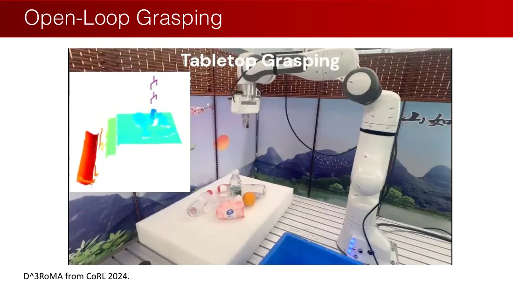
桌面抓取
D³RoMA，CoRL 2024。
Lecture 05 · PDF p9
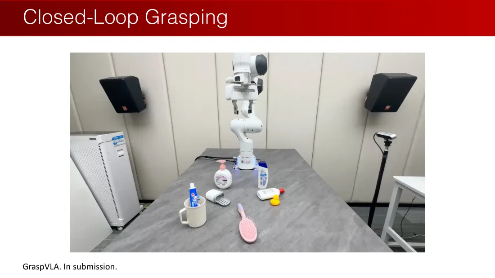
GraspVLA，投稿中。
Lecture 05 · PDF p10
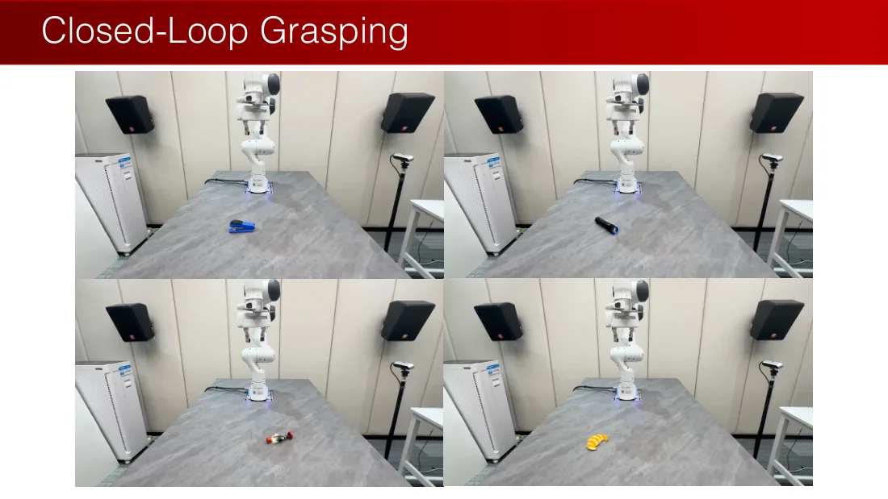
Lecture 05 · PDF p11
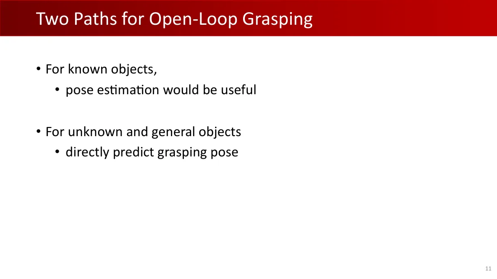
- 对于已知物体：
- 位姿估计会有帮助。
- 对于未知与一般物体：
- 直接预测抓取位姿。
Lecture 05 · PDF p12
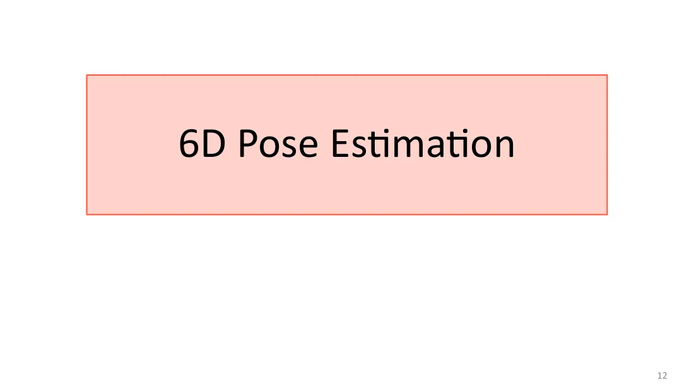
Lecture 05 · PDF p13
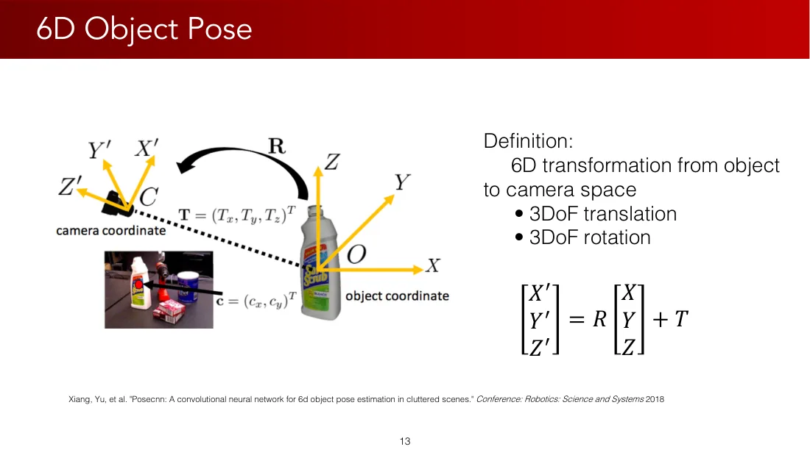
- 定义：将物体坐标系变换到相机坐标系的刚体变换，包括 3 个平移自由度和 3 个旋转自由度。
\[X^{\prime}=RX+T\]
相机坐标系；物体坐标系；X、Y、Z 轴；平移 \(T=\begin{bmatrix}T_x\\T_y\\T_z\end{bmatrix}\)；图像中心 \(c=\begin{bmatrix}c_x\\c_y\end{bmatrix}\)。
来源：Yu Xiang 等，《PoseCNN：一种用于杂乱场景中 6D 物体位姿估计的卷积神经网络》，RSS 2018。
Lecture 05 · PDF p14
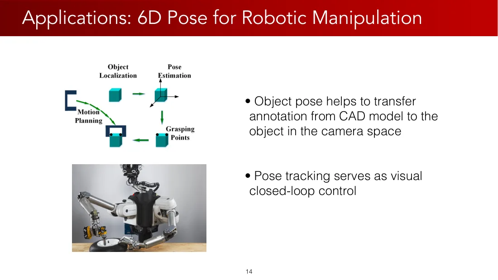
- 将 CAD 模型上的抓取点标注变换到相机坐标系。
- 通过位姿跟踪，实现基于视觉的闭环控制。
物体定位 → 位姿估计 → 运动规划；抓取点。
Lecture 05 · PDF p15
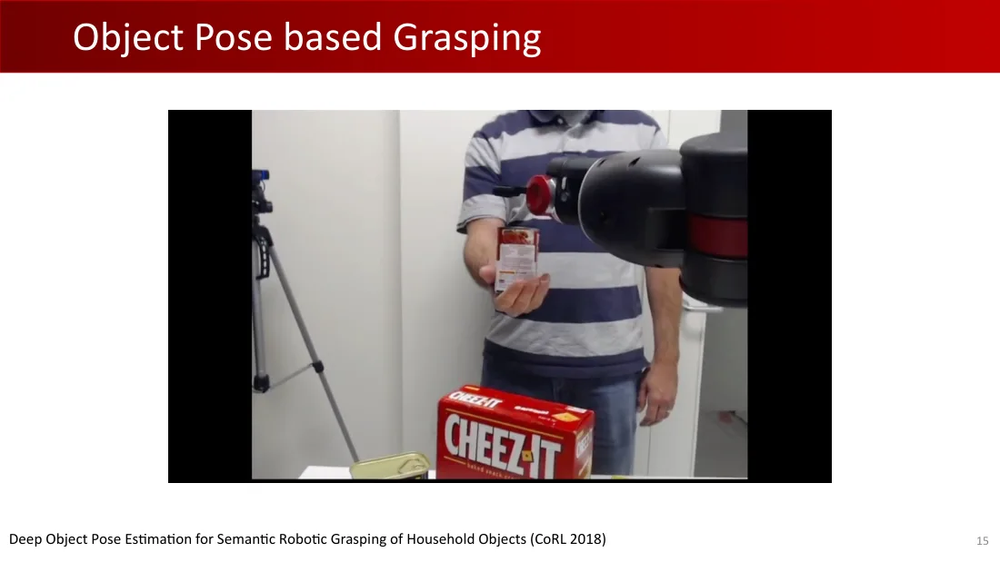
《用于家庭物体语义机器人抓取的深度物体位姿估计》，CoRL 2018。
Lecture 05 · PDF p16
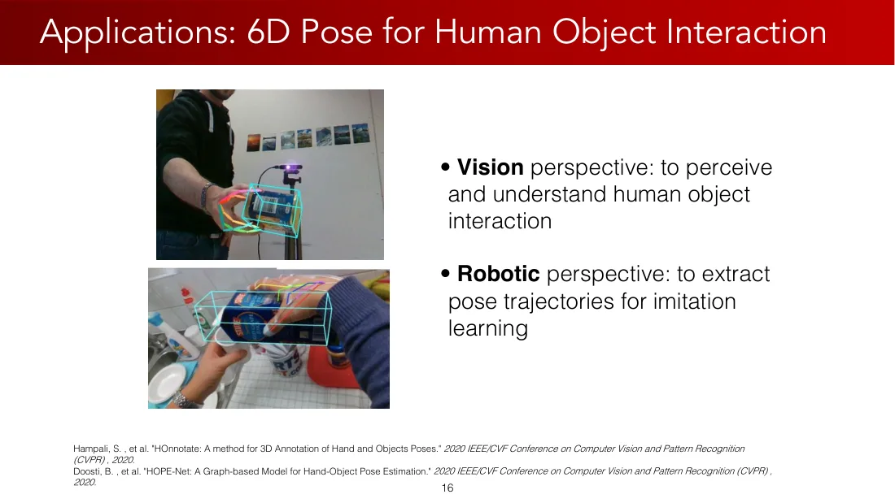
- 视觉：感知并理解人与物体之间的交互。
- 机器人学：提取物体的位姿轨迹，用于模仿学习。
来源：Shreyas Hampali 等，《HOnnotate：手与物体的 3D 标注方法》，CVPR 2020。
来源：Bardia Doosti 等，《HOPE-Net：一种用于手与物体位姿估计的基于图的模型》，CVPR 2020。
Lecture 05 · PDF p17
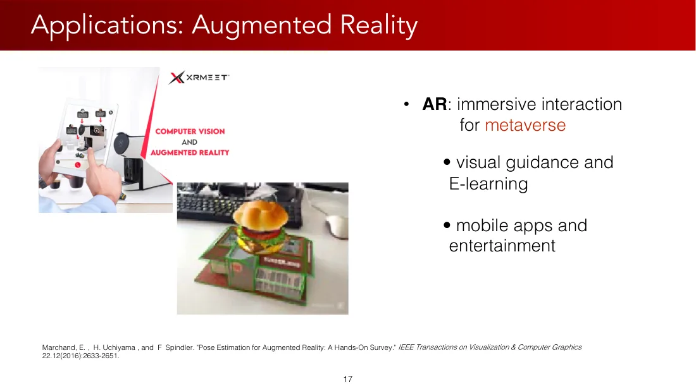
- 通过增强现实（AR），创造沉浸式元宇宙体验。
- 用于电子学习的视觉引导。
- 用于娱乐的移动应用。
计算机视觉；增强现实。
来源：Eric Marchand、Hideaki Uchiyama、Fabien Spindler，《增强现实中的位姿估计：实践综述》，IEEE Transactions on Visualization and Computer Graphics 22(12)，2016，2633–2651。
Lecture 05 · PDF p18
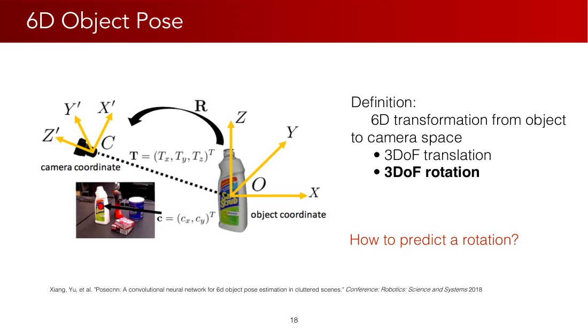
- 定义：将物体坐标系变换到相机坐标系的刚体变换，包括 3 个平移自由度和 3 个旋转自由度。
- 如何预测旋转？
相机坐标系；物体坐标系；X、Y、Z；\(T=\begin{bmatrix}T_x\\T_y\\T_z\end{bmatrix}\)；\(c=\begin{bmatrix}c_x\\c_y\end{bmatrix}\)。
来源：Yu Xiang 等，《PoseCNN：一种用于杂乱场景中 6D 物体位姿估计的卷积神经网络》，RSS 2018。
Lecture 05 · PDF p19
Lecture 05 · PDF p20
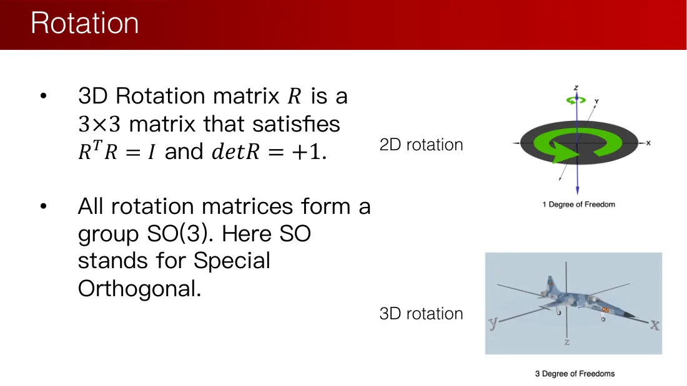
- 旋转矩阵 \(R\in\mathbb R^{3\times3}\)，满足 \(R^{\mathsf T}R=I\)、\(\det(R)=+1\)。
- 构成特殊正交群 SO(3)。
二维旋转：1 个自由度；三维旋转：3 个自由度。
Lecture 05 · PDF p21
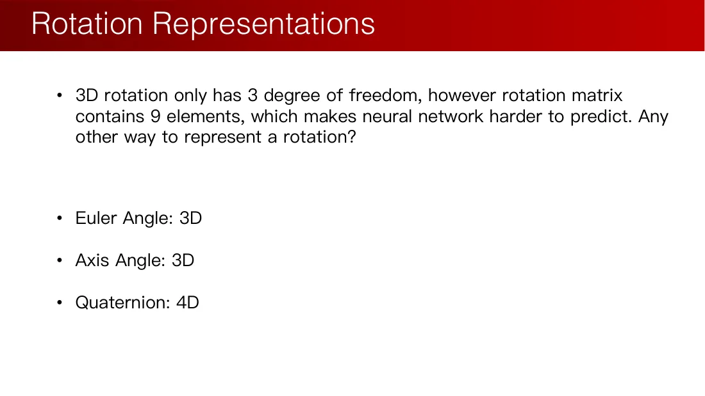
- 三维旋转只有 3 个自由度，但旋转矩阵包含 9 个元素。
- 直接由神经网络预测一个旋转矩阵很困难。
- 是否有其他表示方式？
- 欧拉角：3 个参数。
- 轴角：3 个参数。
- 四元数：4 个参数。
Lecture 05 · PDF p22
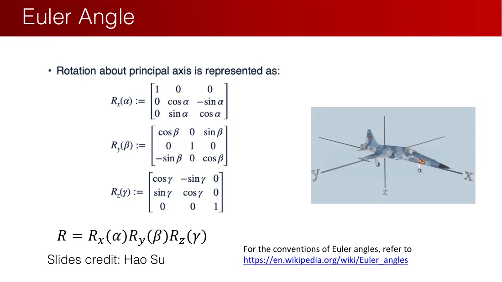
- 绕三个主坐标轴进行旋转。
\[R_x(\alpha)=\begin{bmatrix}1&0&0\\0&\cos\alpha&-\sin\alpha\\0&\sin\alpha&\cos\alpha\end{bmatrix}\]
\[R_y(\beta)=\begin{bmatrix}\cos\beta&0&\sin\beta\\0&1&0\\-\sin\beta&0&\cos\beta\end{bmatrix}\]
\[R_z(\gamma)=\begin{bmatrix}\cos\gamma&-\sin\gamma&0\\\sin\gamma&\cos\gamma&0\\0&0&1\end{bmatrix}\]
\[R=R_x(\alpha)R_y(\beta)R_z(\gamma)\]
幻灯片来源：Hao Su。欧拉角约定：https://en.wikipedia.org/wiki/Euler_angles。
Lecture 05 · PDF p23
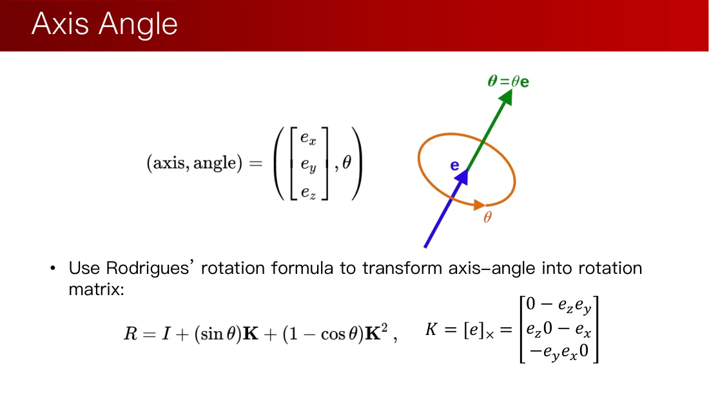
（旋转轴，旋转角）= \(\left(\begin{bmatrix}e_x\\e_y\\e_z\end{bmatrix},\theta\right)\)。
旋转向量：\(\vec\theta=\theta e\)。
利用罗德里格斯旋转公式，将轴角转换为旋转矩阵：\(R=I+\sin\theta K+(1-\cos\theta)K^2\)。
\[K=\begin{bmatrix}0&-e_z&e_y\\e_z&0&-e_x\\-e_y&e_x&0\end{bmatrix}\]
Lecture 05 · PDF p24
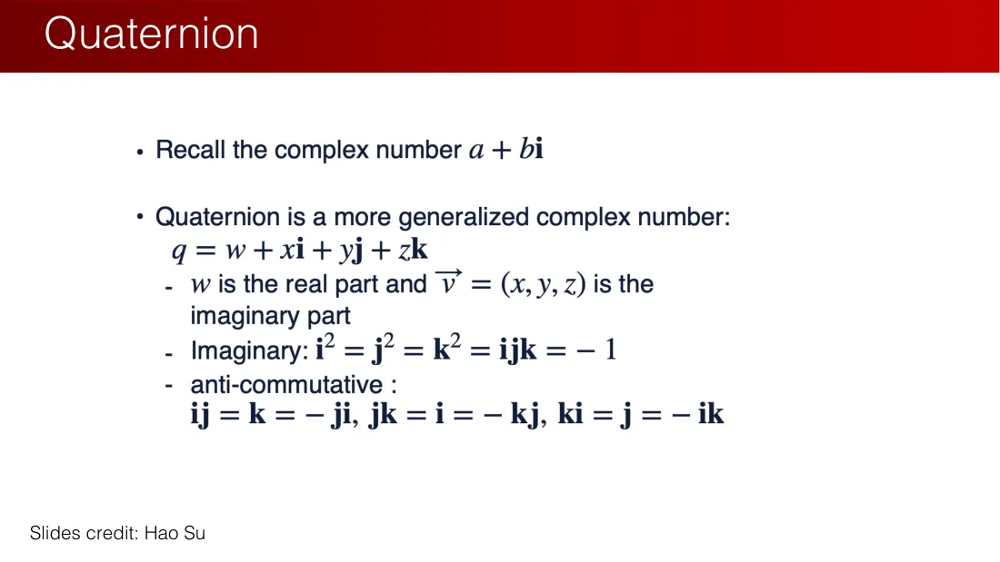
- 回忆复数：\(a+bi\)。
- 四元数：\(q=w+xi+yj+zk\)。
- w 是实部，\(v=(x,y,z)\) 是虚部。
- \(i^2=j^2=k^2=ijk=-1\)。
- 乘法不可交换：\(ij=k=-ji\)；\(jk=i=-kj\)；\(ki=j=-ik\)。
幻灯片来源：Hao Su。
Lecture 05 · PDF p25
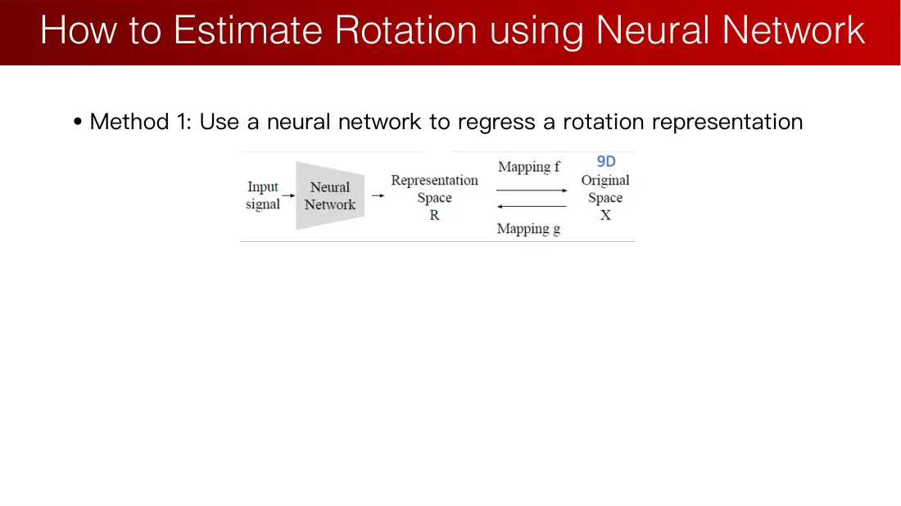
方法 1：回归旋转表示。
输入信号 → 神经网络 → 表示空间 R → 映射 f → 原空间 X（9 维）；反向映射 g。
Lecture 05 · PDF p26
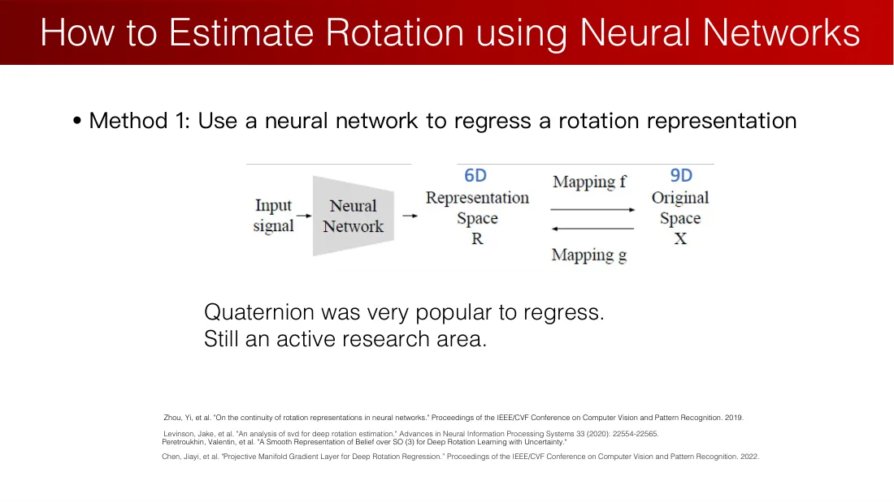
- 方法 1：使用神经网络回归一种旋转表示。
输入信号 → 神经网络 → 表示空间 R（6 维）→ 映射 f → 原空间 X（9 维）；反向映射 g。
四元数曾是很流行的回归表示。该方向仍是活跃的研究领域。
Yi Zhou 等，《神经网络中旋转表示的连续性》，IEEE/CVF 计算机视觉与模式识别会议论文集，2019。
Jake Levinson 等，《深度旋转估计中 SVD 的分析》，Advances in Neural Information Processing Systems 33，2020，22554–22565。
Valentin Peretroukhin 等，《面向含不确定性的深度旋转学习的 SO(3) 上信念的平滑表示》。
Jiayi Chen 等，《用于深度旋转回归的投影流形梯度层》，IEEE/CVF 计算机视觉与模式识别会议论文集，2022。
Lecture 05 · PDF p27
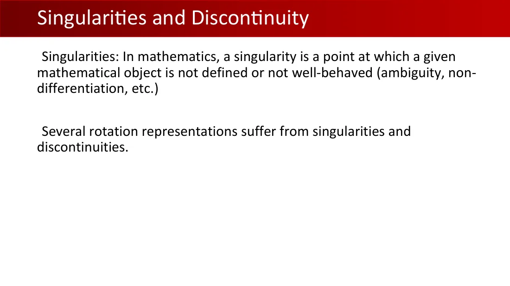
奇异性：在数学中，奇异点是给定数学对象没有定义或表现不良的点，例如存在歧义、不可微等。
一些旋转表示存在奇异性与不连续性。
Lecture 05 · PDF p28
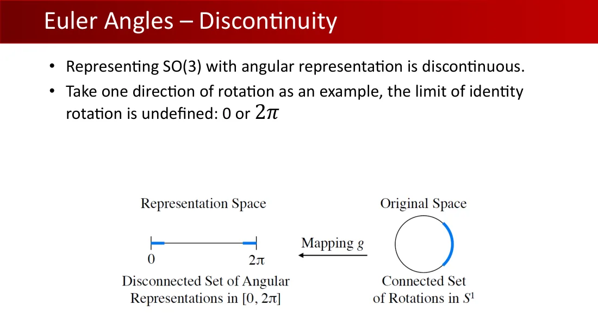
- 用角度表示 SO(3) 是不连续的。
- 以一个旋转方向为例，单位旋转处的极限无法确定：0 或 2π。
表示空间 R；映射 g；原空间 X；0、2π。
Lecture 05 · PDF p29
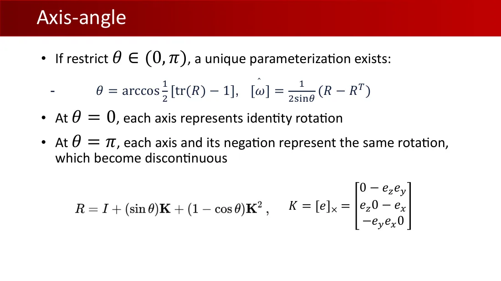
- 当 \(\theta\in(0,\pi)\) 时，表示唯一。
\[\theta=\arccos\left(\frac{\operatorname{tr}(R)-1}{2}\right)\]
\[[\omega]=\frac{R-R^{\mathsf T}}{2\sin\theta}\]
\(R=I+(\sin\theta)K+(1-\cos\theta)K^2\)；\[K=[e]_\times=\begin{bmatrix}0&-e_z&e_y\\e_z&0&-e_x\\-e_y&e_x&0\end{bmatrix}\]
- \(\theta=0\) 时，任意旋转轴均对应单位旋转。
- \(\theta=\pi\) 时，旋转轴与其相反方向表示同一旋转，导致不连续。
Lecture 05 · PDF p30
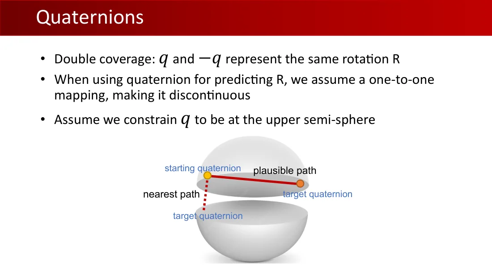
- 四元数是旋转的双覆盖：q 和 −q 表示同一旋转。
- 若要求一一对应，便会出现不连续性。
- 可以约束四元数位于上半球。
起始四元数；目标四元数；可能的路径；最近的路径。
Lecture 05 · PDF p31
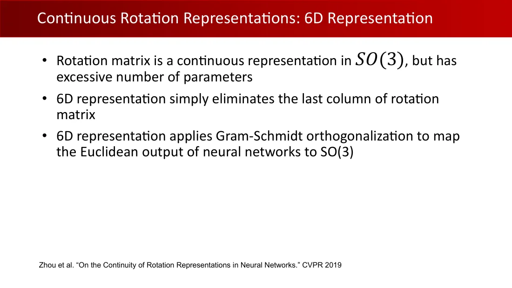
- 旋转矩阵是 SO(3) 的连续表示，但具有冗余参数。
- 去掉第三列，得到 6 维表示。
- 通过 Gram–Schmidt 正交化，将神经网络输出的欧氏空间表示映射到 SO(3)。
来源：Yi Zhou 等，《神经网络中旋转表示的连续性》，CVPR 2019。
Lecture 05 · PDF p32
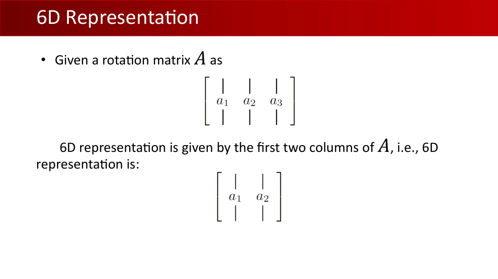
给定旋转矩阵 \(A=\begin{bmatrix}a_1&a_2&a_3\end{bmatrix}\)。
取前两列：\(\begin{bmatrix}a_1&a_2\end{bmatrix}\)。
Lecture 05 · PDF p33
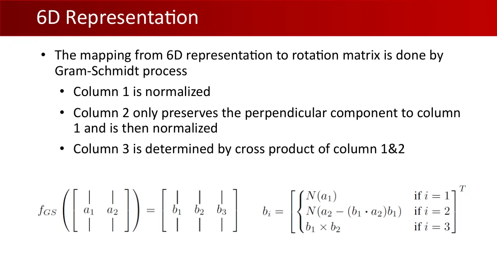
- 从 6 维表示到旋转矩阵的映射通过 Gram–Schmidt 过程完成。
- 将第 1 列归一化。
- 第 2 列只保留垂直于第 1 列的分量，然后归一化。
- 第 3 列由第 1、2 列的叉积确定。
\[f_{\mathrm{GS}}\!\left(\begin{bmatrix}a_1&a_2\end{bmatrix}\right)=\begin{bmatrix}b_1&b_2&b_3\end{bmatrix}\]
\[\begin{aligned}b_1&=N(a_1)\\b_2&=N\!\left(a_2-(b_1\cdot a_2)b_1\right)\\b_3&=b_1\times b_2\end{aligned}\]
Lecture 05 · PDF p34
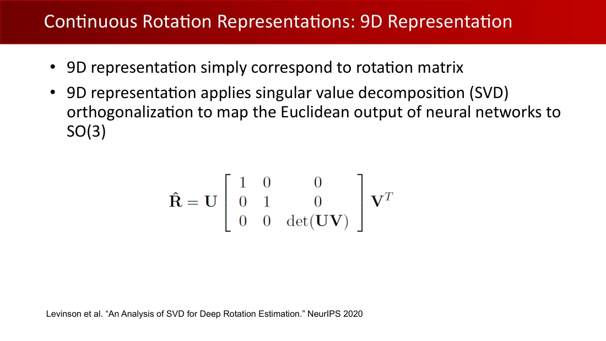
- 9 维表示：预测一个 3×3 矩阵。
- 通过奇异值分解（SVD）进行正交化，从欧氏空间映射到 SO(3)。
\[A=U\Sigma V^{\mathsf T}\]
\[\hat R=U\operatorname{diag}(1,1,\det(UV))V^{\mathsf T}\]
来源：Jake Levinson 等，《旋转估计中 SVD 的分析》，NeurIPS 33，2020，22554–22565。
Lecture 05 · PDF p35
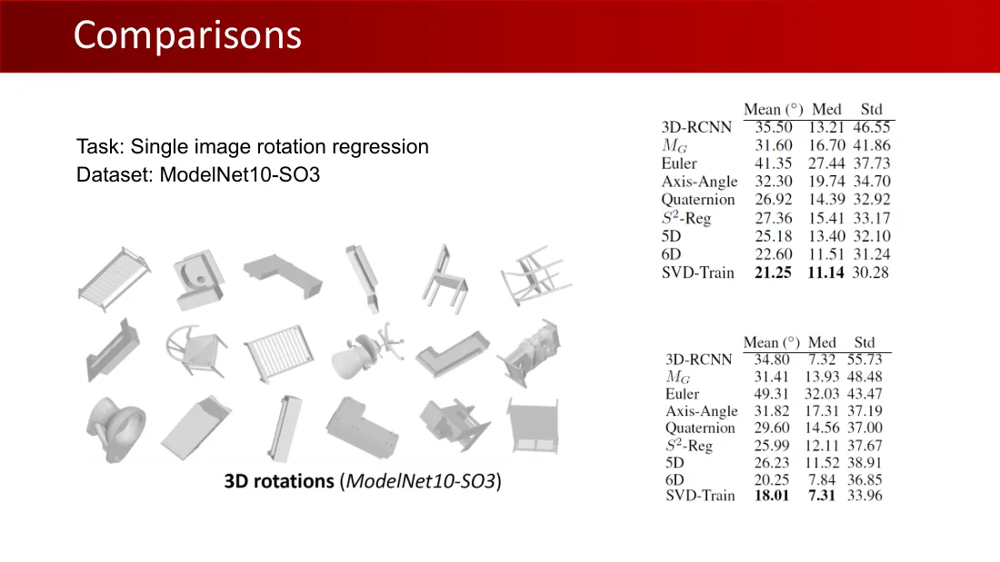
任务：单幅图像的旋转回归。数据集：ModelNet10-SO(3)。
| 方法 | 平均误差（°） | 中位误差（°） | 标准差（°） |
|---|---|---|---|
| 3D-RCNN | 35.50 | 13.21 | 46.55 |
| M_G | 31.60 | 16.70 | 41.86 |
| 欧拉角 | 41.35 | 27.44 | 37.73 |
| 轴角 | 32.30 | 19.74 | 34.70 |
| 四元数 | 26.92 | 14.39 | 32.92 |
| S²-Reg | 27.36 | 15.41 | 33.17 |
| 5D | 25.18 | 13.40 | 32.10 |
| 6D | 22.60 | 11.51 | 31.24 |
| SVD-Train | 21.25 | 11.14 | 30.28 |
| 方法 | 平均误差（°） | 中位误差（°） | 标准差（°） |
|---|---|---|---|
| 3D-RCNN | 34.80 | 7.32 | 55.73 |
| M_G | 31.41 | 13.93 | 48.48 |
| 欧拉角 | 49.31 | 32.03 | 43.47 |
| 轴角 | 31.82 | 17.31 | 37.19 |
| 四元数 | 29.60 | 14.56 | 37.00 |
| S²-Reg | 25.99 | 12.11 | 37.67 |
| 5D | 26.23 | 11.52 | 38.91 |
| 6D | 20.25 | 7.84 | 36.85 |
| SVD-Train | 18.01 | 7.31 | 33.96 |
来源：Jake Levinson 等，《旋转估计中 SVD 的分析》，NeurIPS 2020。
Lecture 05 · PDF p36
Lecture 05 · PDF p37
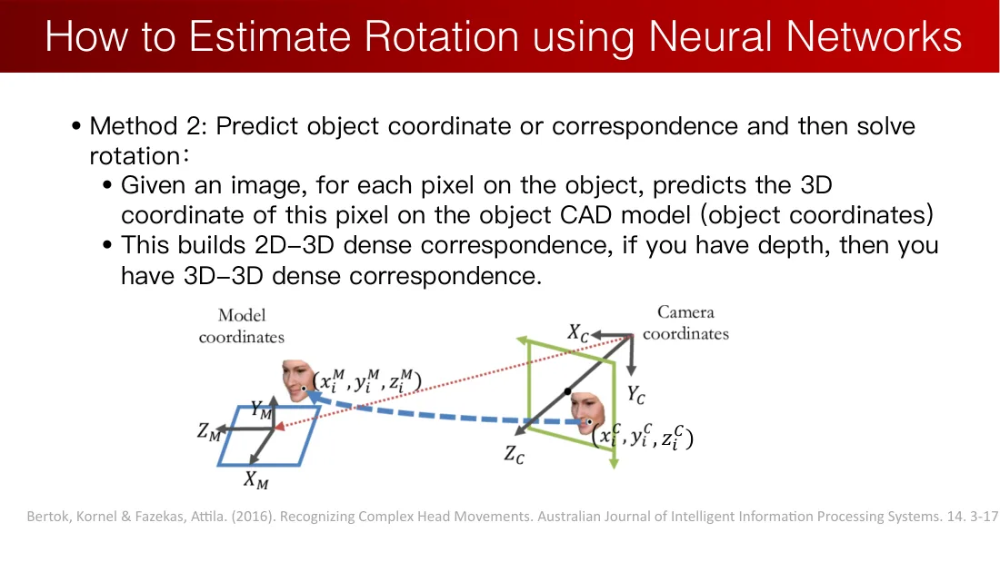
- 方法 2：预测物体坐标或点对应关系，再求解旋转。
- 给定图像，为物体上的每个像素预测它在物体 CAD 模型上的三维坐标，即物体坐标。
- 这样建立了稠密的 2D–3D 对应关系。如果有深度，就可以得到稠密的 3D–3D 对应关系。
模型坐标系；相机坐标系；\(x_m\)、\(y_m\)、\(z_m\)；\(x_c\)、\(y_c\)、\(z_c\)。
Kornel Bertok、Attila Fazekas，《识别复杂的头部运动》，Australian Journal of Intelligent Information Processing Systems 14，2016，3–17。
Lecture 05 · PDF p38
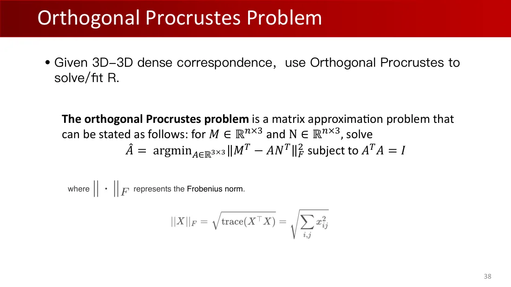
- 给定稠密的 3D–3D 对应关系，利用正交 Procrustes 问题求解／拟合 R。
正交 Procrustes 问题是一个矩阵近似问题，可表述为：对于 \(M,N\in\mathbb R^{n\times3}\)，求解
\(\hat A=\operatorname*{argmin}_{A\in\mathbb R^{3\times3}}\left\|M^{\mathsf T}-AN^{\mathsf T}\right\|_F^2\)，约束为 \(A^{\mathsf T}A=I\)。
其中 \(\|\cdot\|_F\) 表示 Frobenius 范数：\(\|X\|_F=\sqrt{\operatorname{tr}(X^{\mathsf T}X)}=\sqrt{\sum_{i,j}x_{ij}^2}\)。
Lecture 05 · PDF p39
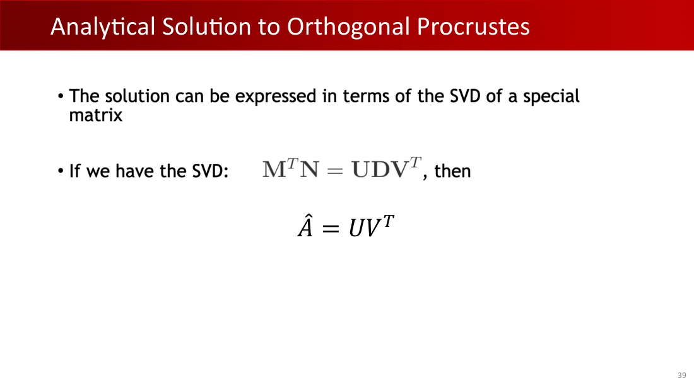
- 解可以由一个特定矩阵的 SVD 得到。
\(M^{\mathsf T}N=UDV^{\mathsf T}\)。
\[\hat A=UV^{\mathsf T}\]
Lecture 05 · PDF p40
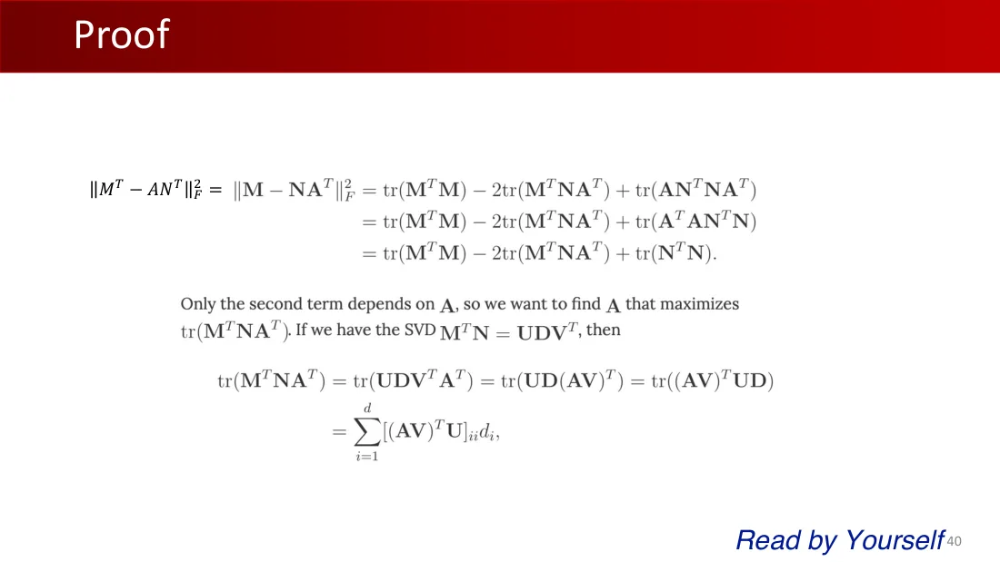
请自行阅读。
\[\|M^{\mathsf T}-AN^{\mathsf T}\|_F^2=\|M-NA^{\mathsf T}\|_F^2\]
\[=\operatorname{tr}(M^{\mathsf T}M)-2\operatorname{tr}(M^{\mathsf T}NA^{\mathsf T})+\operatorname{tr}(AN^{\mathsf T}NA^{\mathsf T})\]
\[=\operatorname{tr}(M^{\mathsf T}M)-2\operatorname{tr}(M^{\mathsf T}NA^{\mathsf T})+\operatorname{tr}(A^{\mathsf T}AN^{\mathsf T}N)\]
\[=\operatorname{tr}(M^{\mathsf T}M)-2\operatorname{tr}(M^{\mathsf T}NA^{\mathsf T})+\operatorname{tr}(N^{\mathsf T}N)\]
只有第二项依赖于 A，因此需要最大化 \(\operatorname{tr}(M^{\mathsf T}NA^{\mathsf T})\)。
对 \(M^{\mathsf T}N=UDV^{\mathsf T}\) 进行 SVD：
\[\begin{aligned}\operatorname{tr}(M^{\mathsf T}NA^{\mathsf T})&=\operatorname{tr}(UDV^{\mathsf T}A^{\mathsf T})\\&=\operatorname{tr}(UD(AV)^{\mathsf T})\\&=\operatorname{tr}((AV)^{\mathsf T}UD)\\&=\sum_{i=1}^d[(AV)^{\mathsf T}U]_{ii}d_i\end{aligned}\]
Lecture 05 · PDF p41
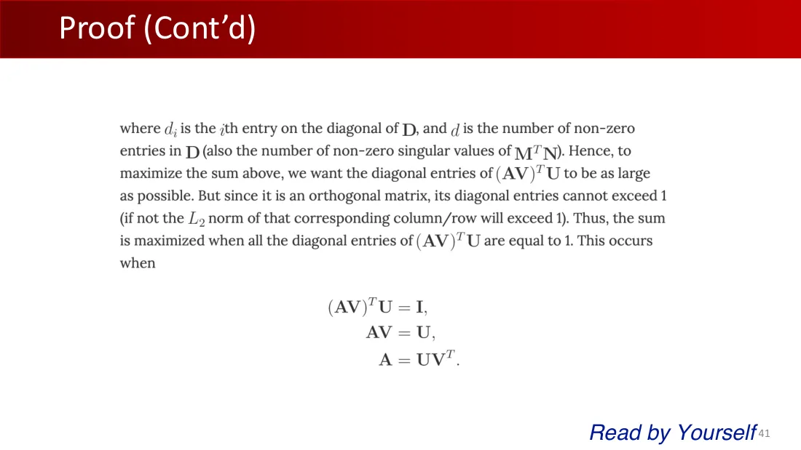
请自行阅读。
\(\sum_{i=1}^d[(AV)^{\mathsf T}U]_{ii}d_i\) 中，\(d_i\) 是 D 的第 i 个对角元素，d 为非零奇异值的数量；它们也是 \(M^{\mathsf T}N\) 的奇异值。
为了使这一和式最大，应让 \((AV)^{\mathsf T}U\) 的对角元素尽可能大。
正交矩阵的元素不能大于 1，否则某行或某列的 \(L_2\) 范数会大于 1。
所有对角元素都为 1 时，和式达到最大值。这发生在 \((AV)^{\mathsf T}U=I\) 时。
\(AV=U\)，因此 \(A=UV^{\mathsf T}\)。
Lecture 05 · PDF p42
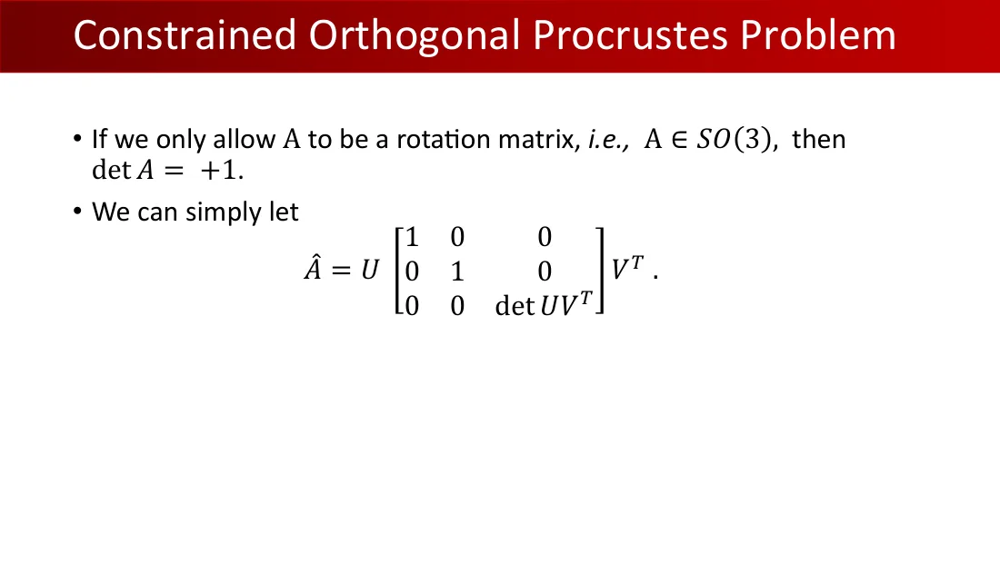
要求 A 是旋转矩阵：\(A\in\mathrm{SO}(3)\)，\(\det(A)=+1\)。
\[\hat A=U\operatorname{diag}(1,1,\det(UV^{\mathsf T}))V^{\mathsf T}\]
Lecture 05 · PDF p43
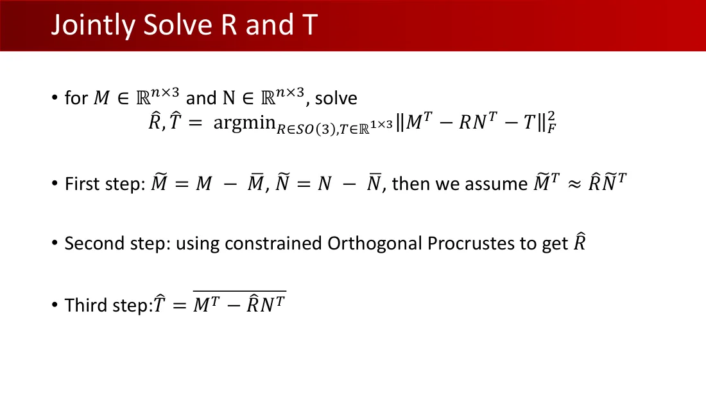
- 对于 \(M,N\in\mathbb R^{n\times3}\)，求解：\(\hat R,\hat T=\operatorname*{argmin}_{\substack{R\in\mathrm{SO}(3)\\T\in\mathbb R^{1\times3}}}\left\|M^{\mathsf T}-RN^{\mathsf T}-T\right\|_F^2\)。
- 第一步：\(\tilde M=M-\bar M\)，\(\tilde N=N-\bar N\)；然后假设 \(\tilde M^{\mathsf T}\approx\hat R\tilde N^{\mathsf T}\)。
- 第二步：利用带约束的正交 Procrustes 问题得到 \(\hat R\)。
- 第三步：\(\hat T=\bar M^{\mathsf T}-\hat R\bar N^{\mathsf T}\)。
Lecture 05 · PDF p44
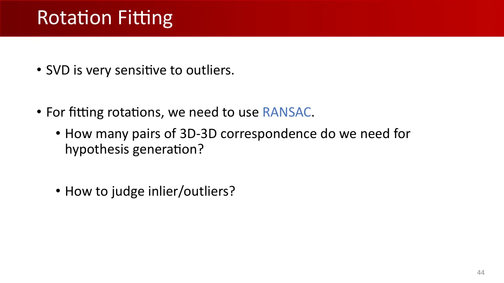
- SVD 方法对离群点敏感。
- 需要 RANSAC。
- 生成一个假设需要多少组点对应？
- 如何判断一个点对应是内点还是外点？
Lecture 05 · PDF p45
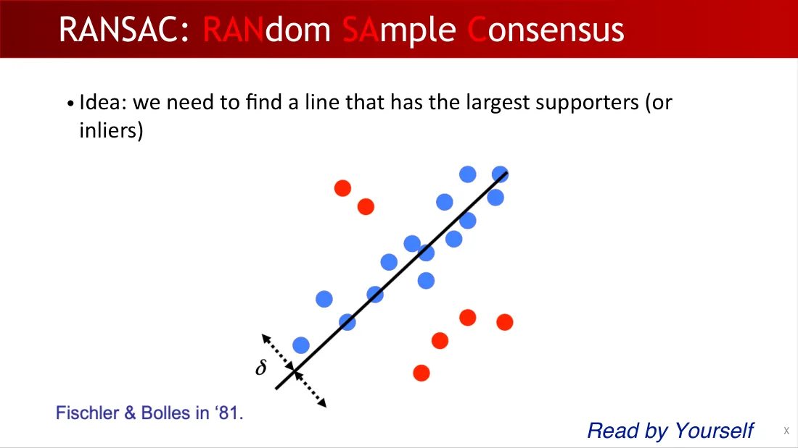
请自行阅读。
基本思想：寻找支持点（内点）最多的直线。
容许误差阈值：δ。
来源：Fischler 与 Bolles，1981。
Lecture 05 · PDF p46
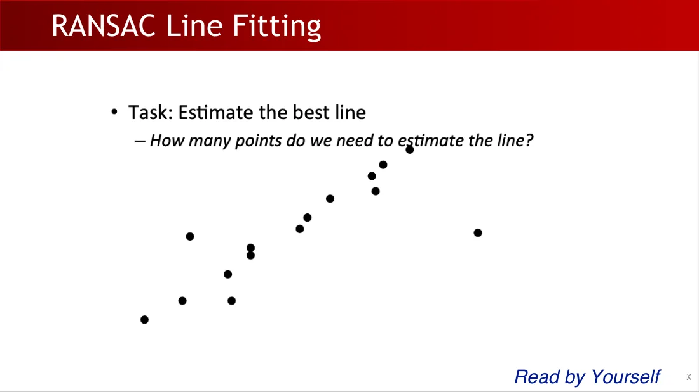
请自行阅读。
任务：估计最好的直线。
需要多少个点？
Lecture 05 · PDF p47
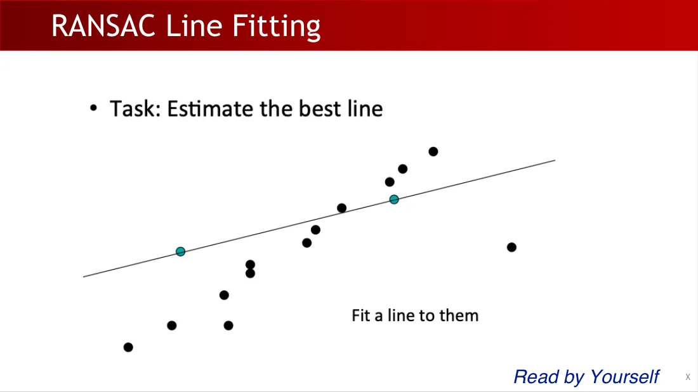
请自行阅读。
任务：估计最好的直线。
用这些点拟合一条直线。
Lecture 05 · PDF p48
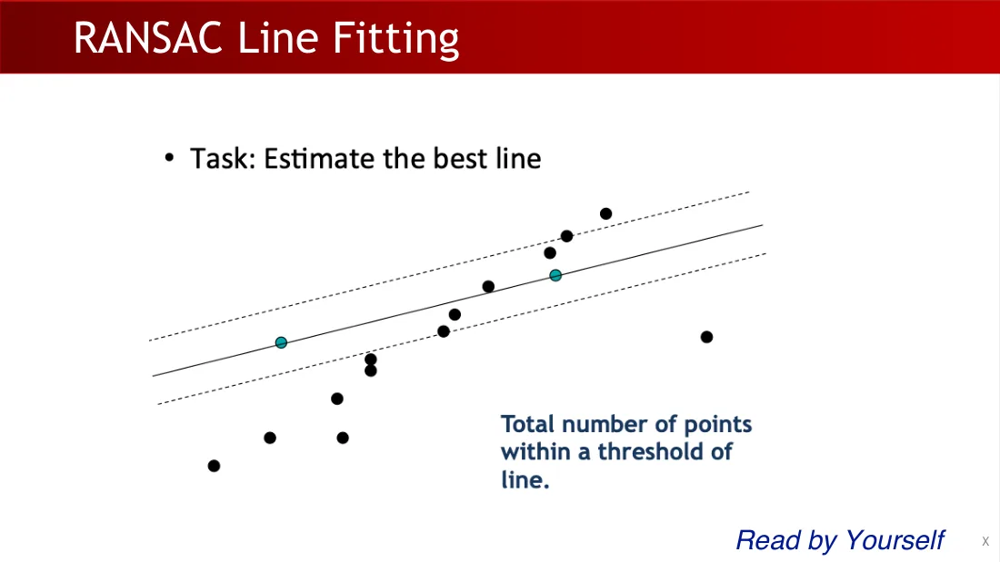
请自行阅读。
任务：估计最好的直线。
统计距直线小于阈值的点的总数。
Lecture 05 · PDF p49
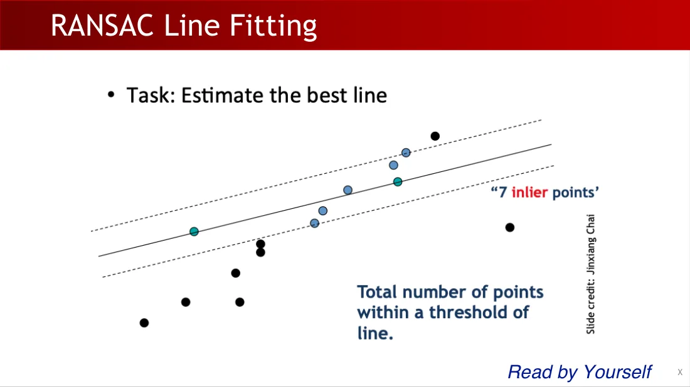
请自行阅读。
任务：估计最好的直线。
统计距直线小于阈值的点的总数。
7 个内点。
幻灯片来源：Andrew Ng。
Lecture 05 · PDF p50
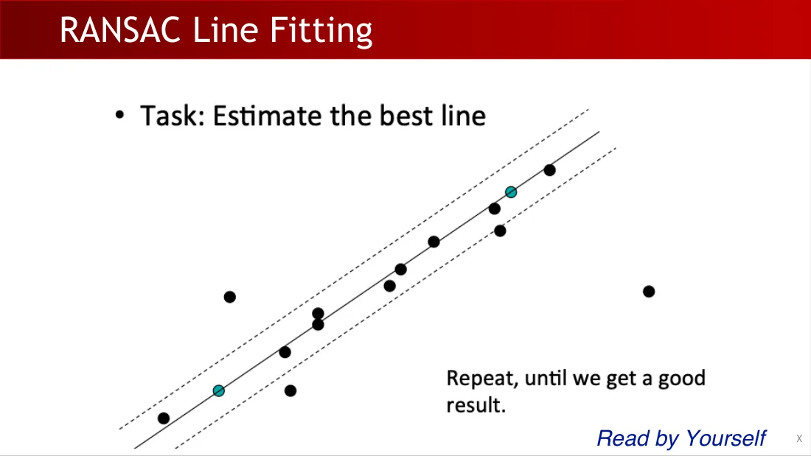
请自行阅读。
任务：估计最好的直线。
重复这一过程，直到得到较好的结果。
Lecture 05 · PDF p51
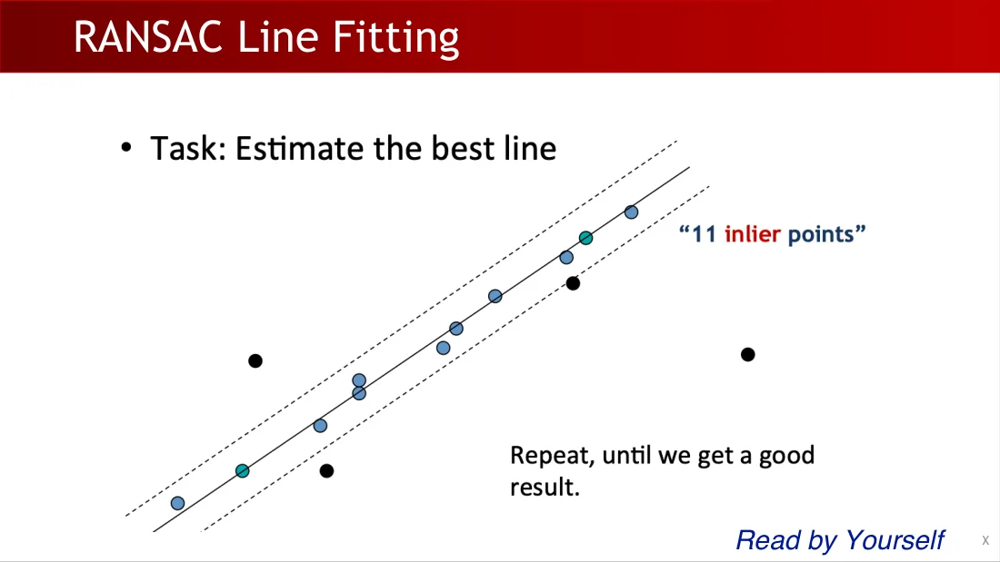
请自行阅读。
任务：估计最好的直线。
重复这一过程，直到得到较好的结果。
11 个内点。
Lecture 05 · PDF p52
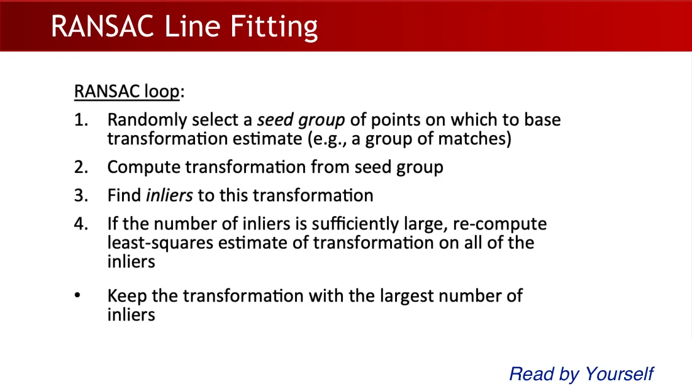
请自行阅读。
循环执行：
- 随机选择一个种子点集合。
- 计算由这些点确定的模型。
- 找到满足该模型的所有内点。
- 若有足够多内点，则用所有内点通过最小二乘重新计算模型。
保留内点数量最多的模型。
Lecture 05 · PDF p53
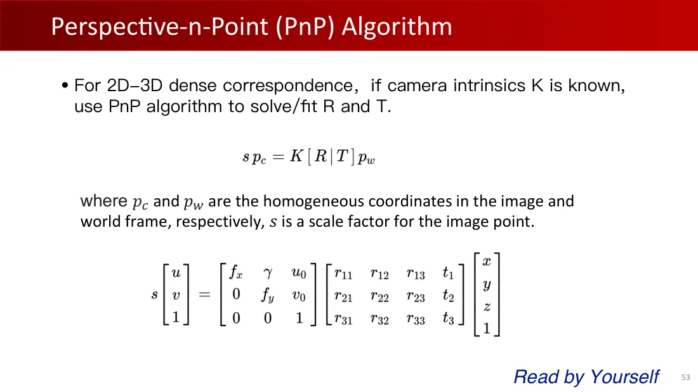
请自行阅读。
已知相机内参 K，通过 2D–3D 点对应求解 R 和 T。
\[sp_c=K\left[R\mid T\right]p_w\]
\(p_c\) 和 \(p_w\) 分别为图像坐标和世界坐标的齐次表示；s 为尺度因子。
\[s\begin{bmatrix}u\\v\\1\end{bmatrix}=\begin{bmatrix}f_x&\gamma&u_0\\0&f_y&v_0\\0&0&1\end{bmatrix}\times\begin{bmatrix}r_{11}&r_{12}&r_{13}&t_1\\r_{21}&r_{22}&r_{23}&t_2\\r_{31}&r_{32}&r_{33}&t_3\end{bmatrix}\times\begin{bmatrix}x\\y\\z\\1\end{bmatrix}\]
Lecture 05 · PDF p54
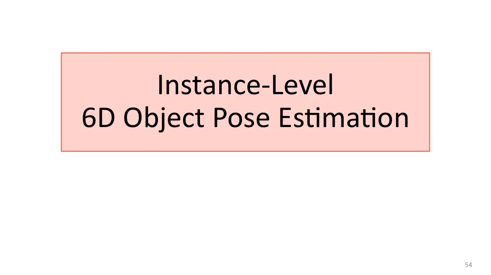
Lecture 05 · PDF p55
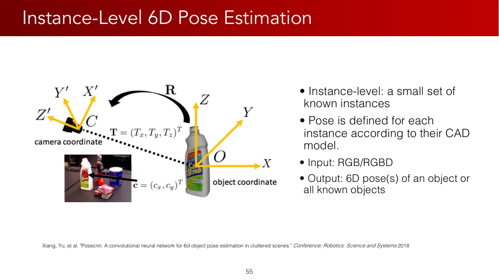
- 对一个已知的小规模物体集合进行位姿估计。
- 根据每个实例的 CAD 模型定义其位姿。
- 输入：RGB 图像或 RGB-D 图像。
- 输出：一个物体或所有已知物体的位姿。
相机坐标系；物体坐标系；X、Y、Z；\(T=\begin{bmatrix}T_x\\T_y\\T_z\end{bmatrix}\)；\(c=\begin{bmatrix}c_x\\c_y\end{bmatrix}\)。
来源：Yu Xiang 等，PoseCNN，RSS 2018。
Lecture 05 · PDF p56

无纹理物体；对称物体；遮挡。
幻灯片来源：Yu Xiang。
Lecture 05 · PDF p57
Lecture 05 · PDF p58
Lecture 05 · PDF p59
Lecture 05 · PDF p60
Lecture 05 · PDF p61

三维平移误差分析：全部 21 个物体；纵轴：准确率，0、0.1、0.2、0.3、0.4、0.5、0.6、0.7、0.8、0.9、1；横轴：平移阈值（米），0、0.02、0.04、0.06、0.08、0.1。
PoseCNN；PoseCNN + ICP；2 厘米；32%；90%。
三维旋转误差分析：PoseCNN；纵轴：数量，0、1000、2000、3000、4000、5000、6000、7000、8000；横轴：旋转角误差，0、50、100、150。
幻灯片来源：Yu Xiang。
Lecture 05 · PDF p62

RGB；深度；真实标签。
PoseCNN（仅 RGB）；PoseCNN + ICP；预测标签。
幻灯片来源：Yu Xiang。
Lecture 05 · PDF p63
Lecture 05 · PDF p64
Lecture 05 · PDF p65
Lecture 05 · PDF p66
Lecture 05 · PDF p67
Lecture 05 · PDF p68
Lecture 05 · PDF p69
Lecture 05 · PDF p70
Lecture 05 · PDF p71